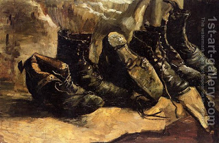

Bava Metzia 45 - Coins Used for Symbolic Exchange

One possible method of acquisition is "exchange" based on "… this was a custom in Israel… a man would give his shoe to the other …". The object used for exchange must be a utensil. Usually the seller pulls a kerchief from the hand of the buyer, after which the object is sold, and the buyer is obligated to pay.
Although paying the money can’t finalize a sale , can money be used for "exchange?" To signify the "exchange," one would announce it, or the coin would be returned. No! Even a golden coin can be removed from circulation, loosing value, which is fundamentally different from a utensil like a shoe.